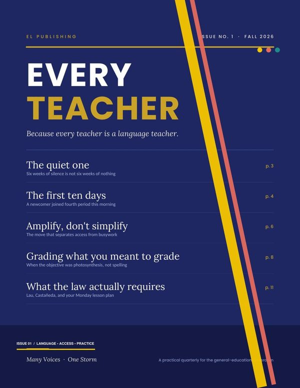
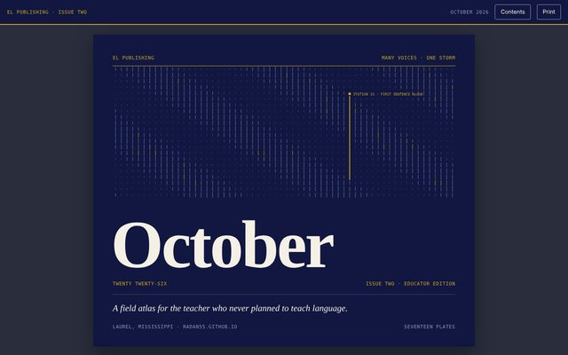
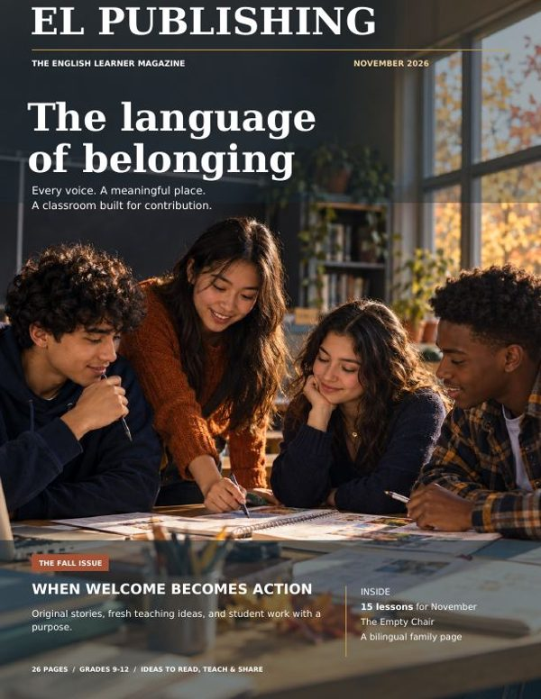
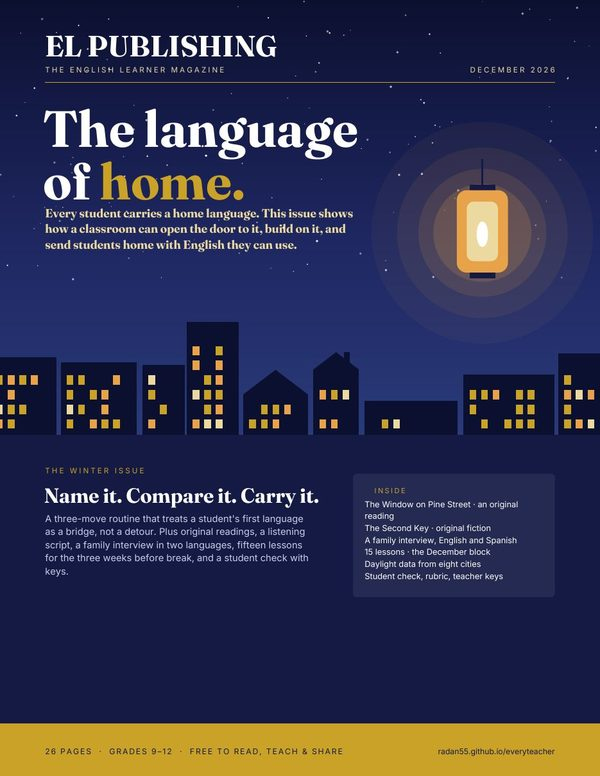
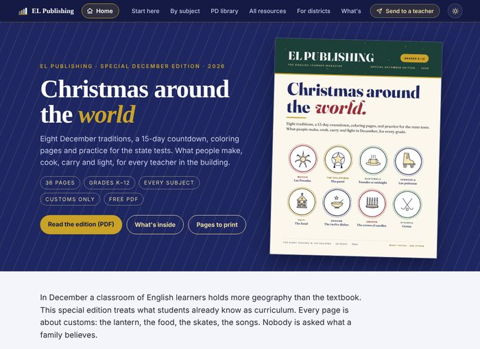
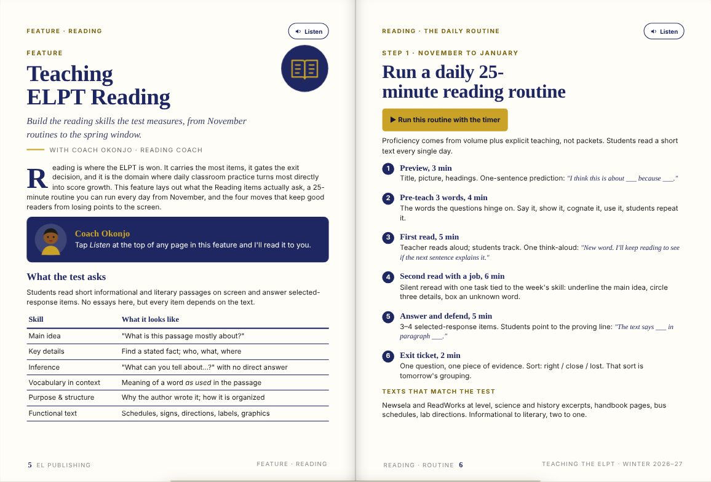
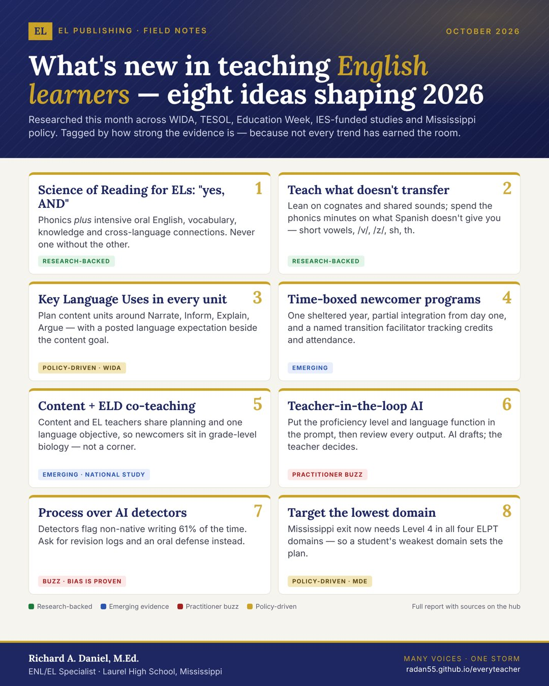

Every EL Publishing periodical in one rack. The teacher magazine: No. 1 Every Teacher (Sept 2026), No. 2 The Field Atlas (Oct), No. 3 The Language of Belonging (Nov), No. 4 The Language of Home (Dec, with a K–12 edition). The special issues: Christmas Around the World (36 pages, K–12, every subject) and Teaching the ELPT (24 pages, interactive). The student magazine Many Voices, Issue 1. Then the bulletins: The Language Bridge, What's New in Teaching English Learners (Field Notes, with evidence ratings) and the monthly EL Tech Radar. For the day-by-day version, read Today in EL.
Professional · the teacher magazine
The monthly EL Publishing magazine for teachers, numbered from the first issue.




Professional · special issues
Single-topic issues for the EL teacher's desk and the whole building.


Professional · bulletins
Short, regular reads: one page a month, or one a day.

For students
Magazines written for multilingual students to read themselves.
← Everything under Every classroom teacher